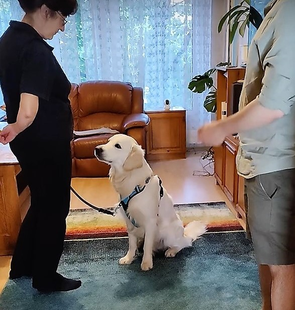
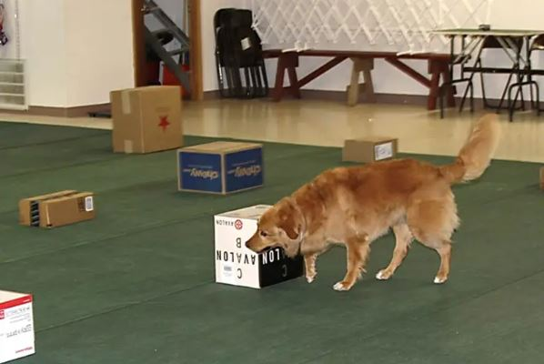
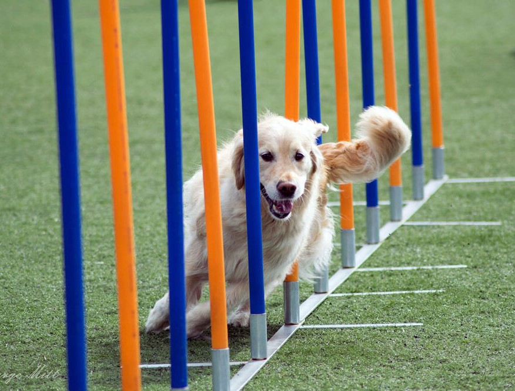

Кучетата не разбират трудни изречения. „Бени, искам да си добро момче и
да седнеш до мен сега“ вероятно ще ви спечели единствено празен поглед. Словесните реплики трябва да бъдат
кратки, прости и лесно различими. Освен това кучетата се учат първо от езика на тялото ни, така че е важно
всички в семейството да използват един и същ подход.
Всички в семейството трябва да използват същите знаци, в противен случай кучето ви може да се обърка.
Може да помогне да направите списък с сигнали и думи, и да го сложите на видимо място в апартамента, където
всеки може всеки да се запознае с тях и да си ги припомни ако забрави някоя.
Правила:
Кучетата живеят в момента, похвалите трябва да идват веднага след като са направили нещо добро. Ако са
направили нещо, което не ви харесва, просто го простете и продължете с добро настроение. Ако останете в лошо
настроение, кучето ще забележи, но няма да разбире защо.
Винаги бъдете мили с кучето, не му се карайте и не му крещете - това е лошо за отношенията ви с него. Трябва да
се стараете кучето да има само положителни асоциации с вас.
Действайте превантивно. Използвайте въображението си, за да прецените какво може да направи кучето, което не
искате да се случва и по какъв начин може да го направите по-малко вероятно, преди дори да се е случило.
Примерно, ако не искате кучето да влиза в някоя стая, не оставяйте вратата отворена. Ако не искате да яде от
масата не му давайте шанс да се докопа до храната и изградете положителна асоциация между това храната да е на
масата а той да не я пипа.
Ако искате да прекратите неприемливо поведение, най-добре е да го разсеята и да му дадете алтернатижно поведение
Примерно, ако започне да дращи килима, му привлечете вниманието и му дайте задача, да седне, и играчка, с която
да се занимава вместо килима. Ако започне да се катери по вас на дивана, станете и излезте от стаята и го
игнорирайте, най-вероятно ще ви последва и ще разбере, че ако се катери по вас, губи това, което иска -
вниманието ви
Ако не се получи първия път, когато го помолите да направи нещо, значи има нещо в обстсановката или
ситуацията, поради която не се получава и няма да проработи ако попитате отново. Повторнието само ще увеличите
вероятността дой ви игнорира в бъдеще.
Докато тренирате, не допускайте два неуспеха подред, ако се провали веднъж, просто намалете трудността с
една-две стъпки

Кучета и обобщение
Кучетата не обобщават особено добре, така че може много да ни затрудни да разберем какво
възприемат, когато ги помолим да направят нещо, което изпълняват в една среда, но не в друга.
Пример: Може да си помислите „кучето ми знае да сяда“. Но ако застанете в ъгъла на стаята с гръб към кучето
и го помолите да седне, то най-вероятно няма да го направи. Също така, ако кучето
носи само топка, а вие му хвърлите ключовете си, като му казжете да ги донесе, най-вероятно ще
ви гледа объркан и няма да ги пипне.
Обобщаването на едно поведение е процес на повторение на желаното поведение в различни среди и условия.
Не може да очаквате, че кучто ще направи това, което искате навън, ако сте го тренирали само вкъщи.
Как да тренирате обобщение
След като кучето изпълнява поведенитео успешно със сигнал, е време да преминете към това кучето ви да
изпълнява поведението на различни повърхности, на различни места в апартамента, на различни места навън, с
различни разсейвания и в различни позиции спрямо къде сте застанли вие и в каква поза. Това дали се прави,
седнали, легнали, подпряни на стената, с гръб или с лице към кучето, с мебели между вас и т.н. има значение за
него. Повече за това под "послушание".
Тренировката на кучета трябва да е забавно за всички участници, ако тренировката не върви добре - направете нещо
лесно, което кучето знае добре, за да приключите ренировката с успех.
Умствена стимулация
И физическата, и умствената стимулация са еднакво важна за кучетата, когато искаме да бъдат здрави и
щастливи. Работещите кучета като ретривърите и колитата са изключително умни кучета и трябва да бъдат
стимулирани всеки ден. Липсата на умствена стимулация може да доведе до поведенчески проблеми и стрес.
Ето списък с примери за дейности за умствена стимулация:
Оставете кучето си да души и да изследва света по верем на разходка
Оставете кучето си да играе с играчка-пъзел (дървен пъзел или черен конг)
Обучение за послушание
Работа с носа (да търси миризма на евкалипт)
Научете кучето си на имената на техните играчки
Направете писта с препятствия за кучето
Обучение за послушание
Голдън ретривърите обичат да работят и тренирането на послушание е чудесен начин да задоволите тази нужда.
Това, което е важно да запомните, е винаги да напредвате и да правите обучението малко по малко по-сложно за
кучето.
Ако не го правите по-сложно, то не е стимулиращо за кучето. Имайте предвид, че кучетата
не могат! да обобщават. На практика това означава, че само защото
могат да "седят" по команда в кухнята, не означава, че могат да го правят навън, където е по-разсейващо.
Следователно, когато тренирате послушание, трябва да прогресирате бавно, с малки стъпки, за да може да имате
лесни успехи на всяка крачка. Пример с командата „стей“ (да стои на едно място):
По-лесно е за кучето да стои на място ако е седнало или легнало, отколкото ат е право на четири крака.
Научете кучето да стои в много лесна среда, като например кухнята без да излизате от стаята. Когато сте го
направили успешно три пъти, можете да го затрудните, например: кучето остава в кухнята, а вие излизате към
хола. Ако кучето остане и ви изчака успешно, като се върнете похвалете го похвалете и наградете. Ако кучето
се провали, не го нграждавайте, просто го върнете в позиция и се подгответе да опитате отново. Направили сте
го прегкалено трудно, затова този път го направете по-лесно, дори от предишният успешен опит. Новата ви цел
е да изградите стабилно стоене, не до коридора, ами до вратата на кухнята. Стъпка по стъпка, успех след
успех, се отдалечавайте малко повече път, доакто не достингете успешно целта. Винаги искате да сте
сигурни, че кучето ще успее, за да бъде забавно!
Когато решите, че стоенете в кухнята е успешно при различни продължителности и далечини, можете да тренирате
във хола и да влезете в спалнята, кухнята и т.н. и бавно да напредвате. Ако кучето не успее, не обръщайте
внимание на неуспеха, просто го върнете на място и опитайте отново, но с по-лесна цел.
Когато кучето може да стои успешно във всяка стая, можете да опитате да го затрудните като, примерно, се
движите с различна скорост, минавате покрай него повече от веднъж без да го освободите или влизате в друга
стая и издавате разсейващи звуци или си подхвърялте някоя негова играчка. Винаги започвайте с минимална
трудност и надграждайте малко по малко.
Следващото ниво, разбира се, е да опитате това навън. Не забравяйте, че
тренирането е винаги по-трудно навън, тъй като се съреновавате с аромати, пръчки, трева, други
хора, кучета и т.н. Затова трябва да провеждате тренировката много по-бавно навън, отколкото вкъщи.
Изберете лесна и неразсейваща обстсановка и започнете с ниски изисквания от кучето. Като му кажете да не
мърда, в началото отстъпете само няколко крачи. Следващия път няколко повече. Почти все едно го тренирате на
ново.
Друг пример за трениране на послушание е да го научите на нов трик, както Георги научи Бени да се завъти около него.
Винаги използвайте големи и хубави награди в началото, когато го учите на нещо ново.
По-долу ще обясня процеса, който Георги използва:
Напътствайте с лакомство движението, което искате да го научите, похвалете го кагато е в движение и го
наградете с лакомство когато е изпълнил задачата.
Пробвайте да водите кучето без лакомство (водите го с празна ръка). Повторете няколко пъти, за да сте
сигурни, че кучето схваща.
Това водене с ръка, малко по малко, се превръща в жестът, с който ще комуникирате с кучето
Сега можете да добавите дума за команда, казвате думата, след което показвате движението сигнал, за да
изградите асоциация между думата и поведението.
След няколко повторения, може да пробвате да изчакате след като кажете думата, за да видите дали има нужда
да покажете жеста сигнал.
Ако не реагира до 2-3 секунди, покажете сигнала с ръка и продължете да изграждате асоциацията.
След като кучето научи командата без знак с ръка, можете да направите упражнението в друга стая.
След като кучето може да го направи в кухнята, хола и коридора, можете да опитате два кръга около вас и
похвала, когато приключите.
Важно! Винаги връщайте тренировката 1-2 стъпки назад, ако кучето не успее, обучението
трябва бъде забавно и окуражаващо, а не скучно и твърде трудно.
Друг начин да направите обучението на послушание по-трудно е да изпълнявате комбинации от команди, например:
"седни", "долу" и "назад", след като вашите команди са изпълнени правилно от кучето - награда. Ако
кучето се провали, не забравяйте да го улесните следващия път. Запомнете: разбърквайте реда на командите, кои
команди използвате, за да не станете предвидими.
Конг
Бени обича Конга. Добре е да накиснете част от обикновените му храна и да го натъпчете в конга. Можете също
да нарежете парченца морков и да ги сложите вътре. Отгоре можете да сложите малко кисело мляко или малко
фъстъчено масло (без захар или сол). За да го направите по-предизвикателно, можете да го замразите. Ако смятате
да го замразите препоръчваме също да сложите нещо вкусно върху конга като кисело мляко.

Работа с нос
Работата с носа е чудесно занимание за кучета, които обичат много да душат. Работата с нос, направена
правилно, е доста предизвикателна и трябва да се прави за кратки интервали, не повече от около 10 минути. Може
да се прави 3-4 пъти седмично. В примерната снимка виждате пример за търсене на контейнери.
По-долу е обобщение на стъпките:
Сложете малко екстрак от евкалипт върху малка попиваща лепенка
Помолете кучето да стои, докато скриете лепенката
Върнете се при кучето (не го викайте при вас) и го доведете до стаята, къдете ще търси миризмата. Кажете му
"сърч".
Когато кучето намери къде сте го скрили и маркира (Бени ще ви погледен и понякога може да седне) -
похвалете го, отидете до него и му дайте награда точно там, където е скритият аромат.
Върнете се към 1 и започнете отначало
За да усъвършенствате играта за работа с носа, можете да поставите стикера по-високо или по-ниско.
Следващото ниво е да опитате в друга стая.

Ивица с препятствияо
Изграждането на проста писта с препятствия за вашето куче е чудесен начин да изгражда контрол над тялото си и
стимулира както тялото, така и ума. Препятствията трябва да могат лесно да се съборят, ако кучето не успее да ги
прескочи или заобиколи успешно, да не се нарани.
Има много начини, по които можете да създадете препятствия, само вашето въображение определя границата -
просто гледайте да имате достатъчно място за спокойно движение на кучето.
Идеи:
Сложете нещо и покажете на кучето да пълзи под него. Може да го приканите с храна. Похвалете го и го наградете,
когато успее.
Поставете и препятствие, което кучето трябва да прескочи.
Сложете пръчки за слалом (вижте примерна снимка) или научете кучето да минава между краката ви
Отстъпването назад е наистина страхотен начин кучето да се научи да контролира тялото си. Също може да потърсите
упражнения за баланс.